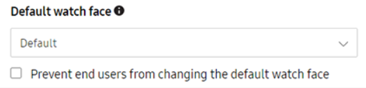
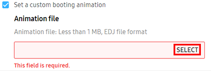
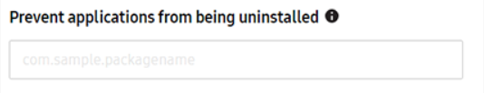
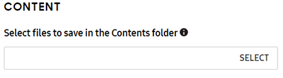
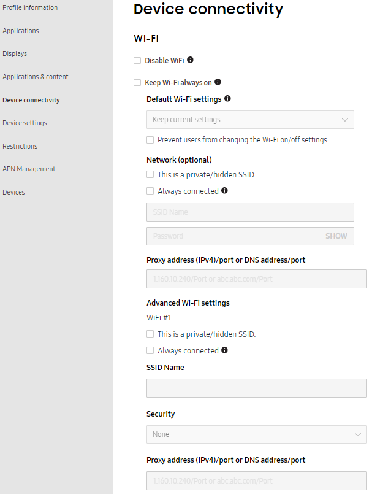

Dynamic edition: Normal mode
Last updated July 26th, 2023
The Dynamic edition’s Normal mode allows a wearable device to function as intended, but with specific settings applied by Knox Configure.
To date, if a wearable device is configured and its assigned profile is changed, a profile push update is made regardless of the profile’s edition (Setup or Dynamic). New rules are now in place to restrict Setup edition profiles from receiving a push update. A Dynamic profile can still push update another Dynamic edition profile, and a Setup edition profile can still push update a Dynamic edition profile. However, a Setup edition profile can no longer update another Setup edition profile, nor can a Dynamic edition profile push update a Setup edition profile.
Displays
The Displays tab allows you to select a custom watch face, set custom booting and shutdown animations when creating a profile. You can also clear previously set animations on this tab.
Read the WKC Animation Guide for instructions on creating animation files. The EDJ file format is used exclusively for wearable device animation and is a unique file format compared to phones and tablet device animation files.
For instructions on setting a custom display, booting animation or shutdown animation:
Set a custom watch face
After uploading a watch face application, set the custom watch face to display on managed watches:
-
Under Default watch face, select the watch face application.
- Prevent device users from changing the default watch face — Restricts the user from changing the set default watch face.

-
Click SAVE.
Set a custom booting animation
-
Under Custom booting and shutdown animations: Select Set a custom booting animation.

-
Click SELECT to upload an EDJ or WGT format animation file.
- The file must be less than 1 MB.
-
Click SAVE if modifying additional display options or NEXT when done.
Note
Devices purchased in Korea don’t support custom booting and shutdown animations.
Set a custom shutdown animation
-
Under Custom booting and shutdown animations: Select Set a custom shutdown animation.

-
Click SELECT to upload an EDJ or WGT format animation file.
- The file must be less than 1 MB.
-
Click SAVE DRAFT if modifying additional display options or NEXT when done.
Note
Devices purchased in Korea don’t support custom booting and shutdown animations.
Applications & content
The Applications & content tab allows you set application restrictions, remap hardware keys, and select files to save in the contents folder.

Set application restrictions
Set application restrictions:
Disable app
-
Under APPLICATION RESTRICTIONS, go to the Disable applications section.
-
Enter the package name of target the app or add a CSV file.

-
Click SAVE.
Note
Tizen apps, a package ID uses the identifier “org.tizen.message” or “org.tizen.call”. Ensure you enter the package ID, not the application ID.
Prevent an app from being uninstalled
-
Under APPLICATION RESTRICTIONS, go to the Prevent applications from being uninstalled section.
-
Enter the package name of the target app, or upload a CSV file.

-
Click SAVE.
Note
Tizen apps, a package ID uses the identifier “org.tizen.message” or “org.tizen.call”. Ensure you enter the package ID, not the application ID.
Application installation restrictions
Allow or deny installation of specific applications:
-
Under APPLICATION RESTRICTIONS, go to the Application installation restrictions section.
-
Select one of the following options:
- Nothing — Set no installation blocklist or allow list.
- Installation blocklist — Enter a package name or upload a CSV file to prevent users from installing specified apps on the device. The list is updated when the policy is updated.
- Installation allowlist — Enter a package name or upload a CSV file to allow specific apps to install on the device. The list is updated when the policy is updated.

-
Click SAVE.
Note
Tizen apps, a package ID uses the identifier “org.tizen.message” or “org.tizen.call”. Ensure you enter the package ID, not the application ID.
Set app notification restrictions
This feature enables IT admins to restrict app notifications from displaying on the watch face UI.
There’s two options when disabling notifications:
- Create a blocklist — Specify a list of apps that are restricted from displaying notifications, all other apps can display notifications.
- Create an allow list — Specify a list of apps that are allowed to display notifications, all other apps are restricted from displaying notifications.
To set app notification restrictions:
-
Under APPLICATION RESTRICTIONS, go to the Notification restrictions section.
-
Enter the package name of the application or add a CSV file to create either a:
- Notification blocklist
- Notification allowlist

-
Click SAVE.
Note
Tizen apps, a package ID uses the identifier “org.tizen.message” or “org.tizen.call”. Ensure you enter the package ID, not the application ID.
Remap hardware keys
Map the back and home key on wearable to invoke apps when long or double pressed:
-
Under REMAP HARDWARE KEYS, set the following configurations:
- Back key (long press) — Provide the App ID to invoke an app when a wearable device’s Back key is long pressed.
- Clear Back key mapping — Clears the existing mapping set for wearable device’s back key.
- Home key (double press) — Provide the Package name and Application ID for the wearable device’s back key functionality. This invokes an app when a wearable device’s Home Key is double pressed
- Clear Home key mapping — Clears the existing mapping set for wearable device’s Home key.
- Back key (long press) — Provide the App ID to invoke an app when a wearable device’s Back key is long pressed.
-
Click SAVE.
Content
Set the device to save all downloaded content in the Contents folder by default:
-
Under CONTENT, go to Select files to save in the Contents folder.
-
Click SELECT.
- Selected files, such as video, music, or digital books are then uploaded to the device’s content folder upon pushing the profile.

Device connectivity
The Device connectivity tab allows you set Wi-Fi settings, Bluetooth, location, airplane mode, mobile data, and data roaming.

To customize device connectivity:
Set custom Wi-Fi settings
Silently turn on Wi-Fi and set the device to a preconfigured access point (AP) with a given network SSID and password if the AP is in range:
- Under WI-FI, set the following configurations:
- Disable Wi-Fi settings — Restricts devices from using Wi-Fi connectivity.
- Select Keep Wi-Fi always on to keep Wi-Fi continuously on, even when the wearable battery is low. Enabling this setting prevents the Wi-Fi from being turned off, and disables the Power saving and Airplane modes.
- Default Wi-Fi settings — Overrides the current Wi-Fi settings on the device. Select: Keep current settings, On or off.
- Prevent users from changing the Wi-Fi on/off settings — Prevents the device user from changing the Wi-Fi settings on the device. Maintains the Default Wi-Fi settings.
- Network — Enter the SSID name and Password to automatically connect to a Wi-Fi network.
- This is a private/hidden SSID — Select this option to keep the network SSID hidden, and not exposed on the list of available networks.
- Always connected — Select this option to connect the device automatically to a designated AP once configured.
- Proxy settings / Proxy port — Set the IPv4 or IPv6 proxy address and specify the proxy port used to for the wearable device’s Wi-Fi connection.
- Specify advanced Wi-Fi settings:
- This is a private/hidden SSID — Select this option to keep the network SSID hidden, and not exposed on the list of available networks.
- Always connected — Select this option to connect the device automatically to a designated AP once configured.
- SSID name — Enter the network name or Service Set Identifier (SSID).
- Security — Select the security type for the Wi-Fi connection .
- Proxy settings / Proxy port — Set the IPv4 or IPv6 proxy address and specify the proxy port to use for the wearable device’s Wi-Fi connection.
- Click SAVE.
Set custom Bluetooth settings
- Under BLUETOOTH, set the following configurations:
- Disable Bluetooth settings — Disables the Bluetooth feature on the device.
- Default Bluetooth settings — Overrides the current Bluetooth settings on the device. Select: Keep current settings, On, or Off.
- Prevent users from changing Bluetooth on/off settings — Prevents the device user from changing the Bluetooth settings on the device. Maintains the Default Bluetooth settings.
- Click SAVE.
Set custom GPS location settings
Note
Available for Android O OS and below.
- Under LOCATION, set the following configurations:
- Disable GPS locating method only — Disables the GPS feature on the device.
- Default GPS settings — Overrides the current GPS settings on the device. Select: Keep current settings, On, or Off.
- Prevent users from changing GPS settings — Prevents the device user from changing the GPS settings on the device. Maintains the Default GPS settings.
- Click SAVE.
Set custom NFC connectivity settings
- Under NFC, set the following configuration:
- Disable NFC — Prevent the device user or third party apps from turning NFC on when NFC is disabled.
- Click SAVE.
Set custom Airplane mode settings
- Under AIRPLANE MODE, set the following configurations:
- Disable Airplane mode — Disables Airplane mode feature on the device.
- Default Flight mode settings — Overrides the current Flight mode settings on the device. Select: Keep current settings, On, or Off.
- Prevent users from changing Airplane mode settings — Prevents the device user from changing the Airplane mode settings on the device. Maintains the Default Flight mode settings.
- Click SAVE.
Note
Setting the Airplane mode to On will disable Mobile data settings.
Set custom mobile data settings
- Under MOBILE DATA, set the following configurations:
- Disable mobile data — Prevents mobile data from being turned ON.
- Default mobile data settings — Overrides the current mobile data settings on the device. Select: Keep current settings, On, or Off.
- Prevent users from changing mobile data settings — Prevents the device user from changing the mobile data settings on the device. Maintains the Default mobile data settings.
- Click SAVE.
Note
Mobile data can’t be enabled if airplane mode is enabled.
Set custom data roaming settings
- Under DATA ROAMING, set the following configurations:
- Disable data roaming — Prevents data roaming from being turned ON.
- Default data roaming settings — Overrides the current data roaming settings on the device. Select: Keep current settings, On, or Off.
- Prevent users from changing data roaming settings — Prevents the device user from changing the data roaming settings on the device. Maintains the Default mobile data settings.
- Click SAVE.
Device settings
Hide Settings menu/elements
Select which menu options or elements are hidden in the device’s Settings UI.
- ALL — Hide all wearable device options.
- Display settings — Hide the wearable device’s display options.
- Sound settings — Hide the wearable device’s sound options.
- Connection settings — Hide the wearable device’s connection options.
- Gear information — Hide the wearable device’s gear information options.
Power saving
- Disable Power saving mode - Disables device user access to Power Saving mode.
Developer settings
- Default USB debugging mode — By default, USB debugging is OFF. Enable USB debugging by selecting ON. USB debugging permits the wearable device user to transfer debugging information to and from their device via a USB connection.
- Prevent USB debugging — Restrict the wearable device from transmitting and receiving debug information utilizing a USB connection.
Restrictions
Note
Knox wearable devices can map their hardware keys to specific application functions. For more information, go to Remap hardware keys (wearables only).
The following settings enable an IT admin to restrict specific access and storage capabilities to reduce wearable device vulnerabilities:
- Disable device power off for users — Restrict users from powering the device off. The wearable device will only turn off if this setting is disabled or if the battery level is critically low.
- Disallow factory reset — Restricts devices from factory resetting. Stops devices from reverting numerous features to their out of box default settings.
- Disallow screen capture — Restrict the device user from making, saving and transferring screen captures.
- Disable Software Updates (Firmware updates via Wi-Fi and Mobile networks) — Prevents the wearable device from displaying and downloading software update notifications. Even if users have enabled automatic updates.
- Prevent users from accessing the Settings menu — Blocks the device user from accessing the Settings Menu. This feature is only available on devices in Without phone connection (WPC) mode running the Tizen 4.0 OS or higher.
APN Management

The Access Point Name (APN) is the name of the gateway between a carrier providing 2G, 3G, or 4G mobile network service for wearable devices. Devices must be configured with the correct APN information to establish connectivity.
Note
APN support isn’t available for wearable devices utilizing a setup edition Knox Configure profile, and only supported for wearable devices utilizing a dynamic edition profile.
General
If adding or editing an Access Point (AP) resource, provide the following configuration details:
Set as preferred APN — Disabled by default, set a preferred AP resource.
- APN Name — Assign a name to the specified access point network.
- APN (Access Point Name) Provide a name for the APN utilized access point hardware resource.
- Authentication type — Select an authentication scheme to validate user credentials. Options are None, PAP or CHAP.
- APN Protocol — Set the device to use IPv4 or IPv6 formatted network address as its APN connection medium.
- APN roaming Protocol — Set the device to use an IPv4 or IPv6 formatted network address as its roaming protocol.
Advanced
- Server — Name the server resource supporting the APN.
- Proxy — Provide the network proxy supporting the APN device connection.
- Port — Add the physical port used to route APN supported traffic.
- Username / Password — Set the username and password combination supporting the APN connection login.
Summary

Review the settings configured for each category. Optionally select the General info and Additional EULA tabs to review the information entered. If you want to make any changes, click Back. Once you have verified the settings are correct, click Submit. Select Back to top to navigate back to the top of that respective screen.
You’ve completed 3/4 steps! Go to the next step.
Is this page helpful?